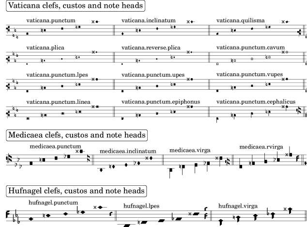

Tipografía de música antigua
Este fragmento de código presenta muchos de los símbolos incluidos en la fuente Emmentaler que LilyPond usa para tipografiar la música antigua.
m = { c1 e f ges cis' \bar "||" } \score { \new VaticanaVoice { \clef "vaticana-fa2" \key es \major \textMark \markup \rounded-box "Vaticana clefs, custos and note heads" \override NoteHead.style = #'vaticana.punctum <>^"vaticana.punctum" \m \override NoteHead.style = #'vaticana.inclinatum <>^"vaticana.inclinatum" \m \override NoteHead.style = #'vaticana.quilisma <>^"vaticana.quilisma" \m \clef "vaticana-fa1" \override NoteHead.style = #'vaticana.plica <>^"vaticana.plica" \m \override NoteHead.style = #'vaticana.reverse.plica <>^"vaticana.reverse.plica" \m \override NoteHead.style = #'vaticana.punctum.cavum <>^"vaticana.punctum.cavum" \m \override NoteHead.style = #'vaticana.lpes <>^"vaticana.punctum.lpes" \m \override NoteHead.style = #'vaticana.upes <>^"vaticana.punctum.upes" \m \override NoteHead.style = #'vaticana.vupes <>^"vaticana.punctum.vupes" \m \override NoteHead.style = #'vaticana.linea.punctum <>^"vaticana.punctum.linea" \m \override NoteHead.style = #'vaticana.epiphonus <>^"vaticana.punctum.epiphonus" \m \override NoteHead.style = #'vaticana.cephalicus <>^"vaticana.punctum.cephalicus" \m \break \textMark \markup \rounded-box "Medicaea clefs, custos and note heads" \set VaticanaStaff.alterationGlyphs = #alteration-medicaea-glyph-name-alist \override VaticanaStaff.Custos.style = #'medicaea \clef "medicaea-fa2" \override NoteHead.style = #'medicaea.punctum <>^"medicaea.punctum" \m \clef "medicaea-do2" \override NoteHead.style = #'medicaea.inclinatum <>^"medicaea.inclinatum" \m \override NoteHead.style = #'medicaea.virga <>^"medicaea.virga" \m \clef "medicaea-fa1" \override NoteHead.style = #'medicaea.rvirga <>^"medicaea.rvirga" \m \break \textMark \markup \rounded-box "Hufnagel clefs, custos and note heads" \set Staff.alterationGlyphs = #alteration-hufnagel-glyph-name-alist \override VaticanaStaff.Custos.style = #'hufnagel \clef "hufnagel-fa2" \break \override NoteHead.style = #'hufnagel.punctum <>^"hufnagel.punctum" \m \clef "hufnagel-do2" \override NoteHead.style = #'hufnagel.lpes <>^"hufnagel.lpes" \m \clef "hufnagel-do-fa" \override NoteHead.style = #'hufnagel.virga <>^"hufnagel.virga" \m } \layout { \context { \Score \override TextScript.font-size = #-2 \override TextMark.break-align-symbols = #'(left-edge clef staff-bar) \override TextMark.padding = 4 \omit BarNumber } \context { \VaticanaStaff alterationGlyphs = #alteration-vaticana-glyph-name-alist } } }
